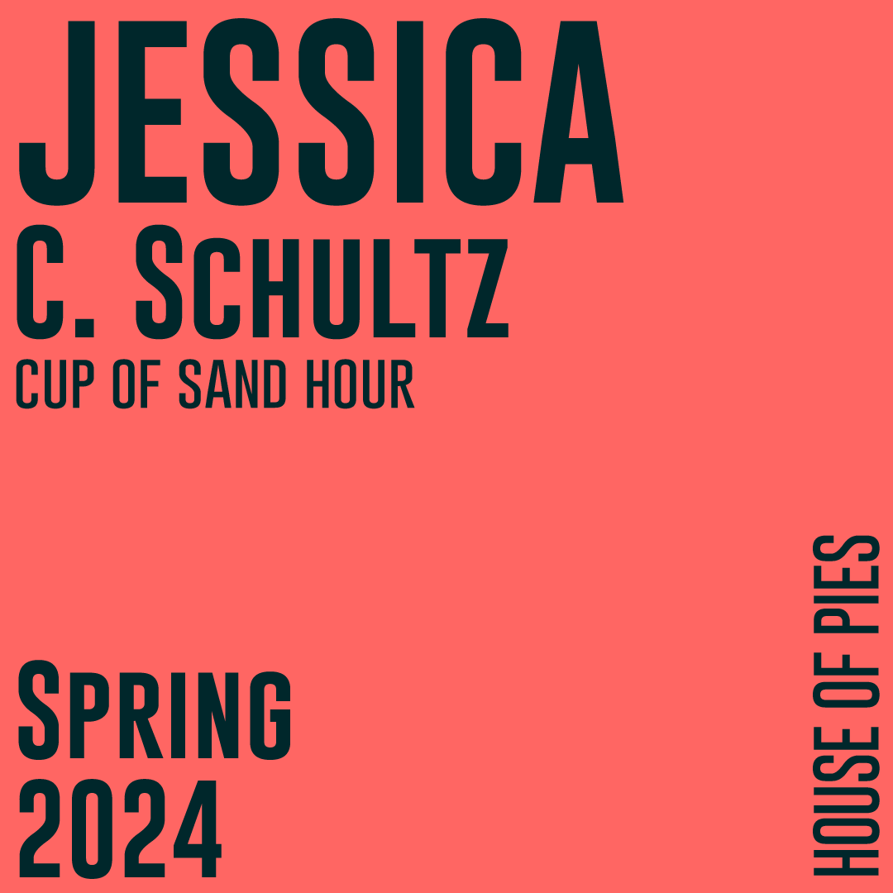
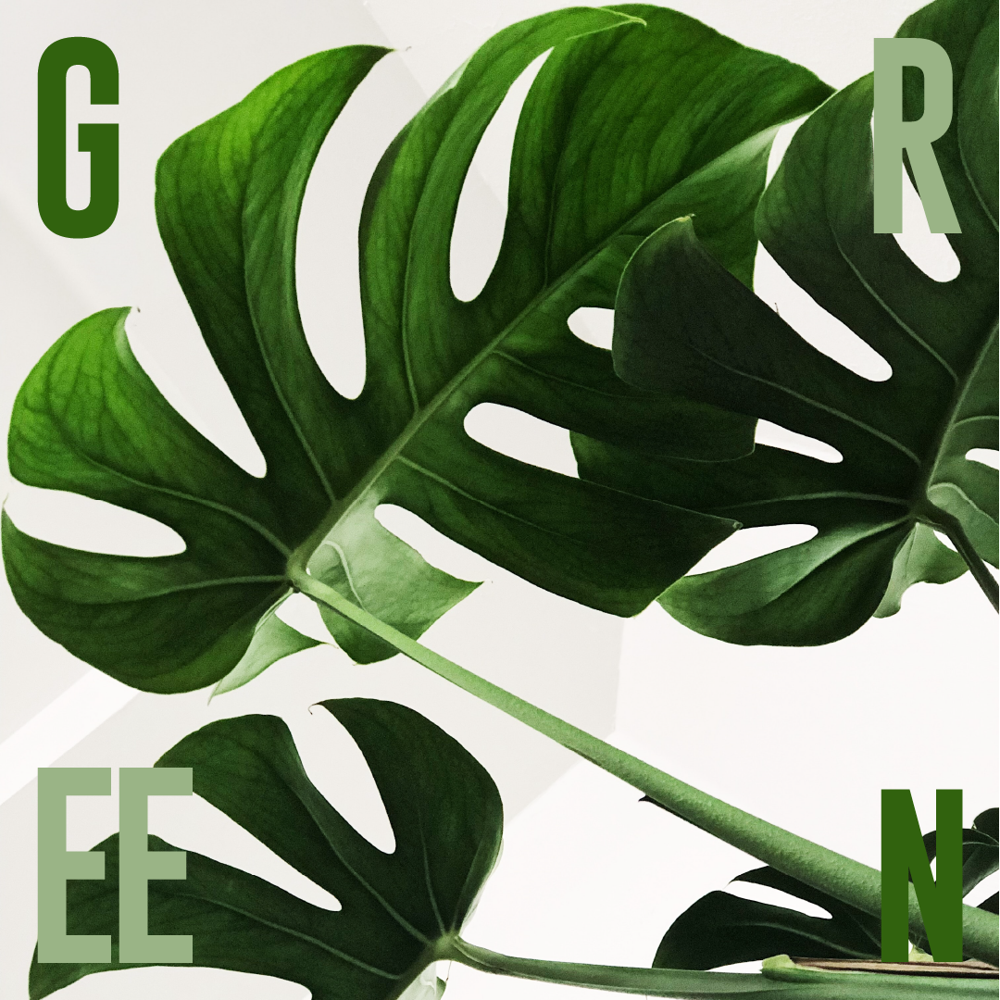
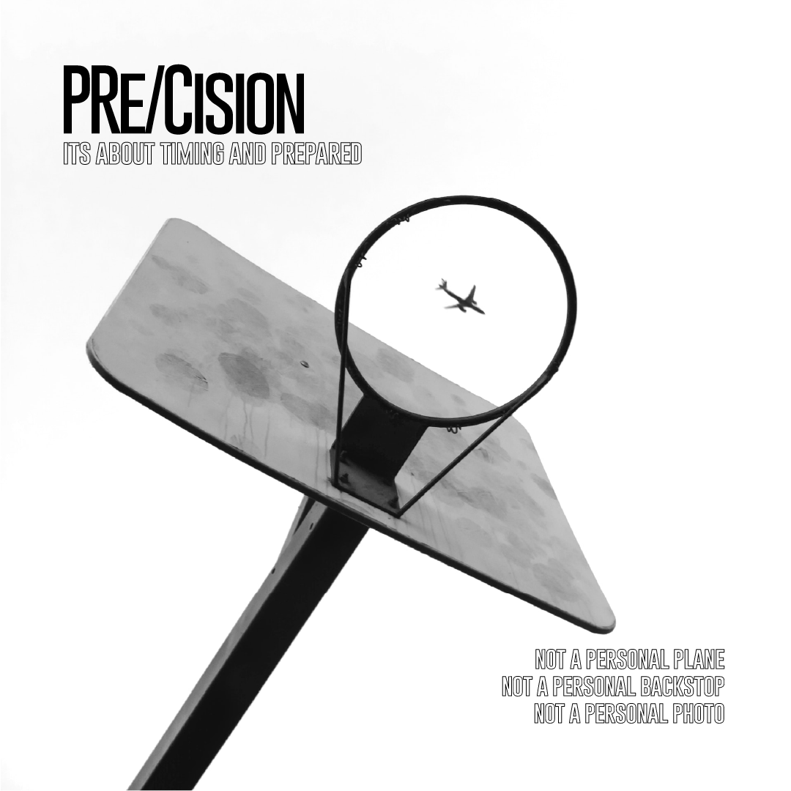
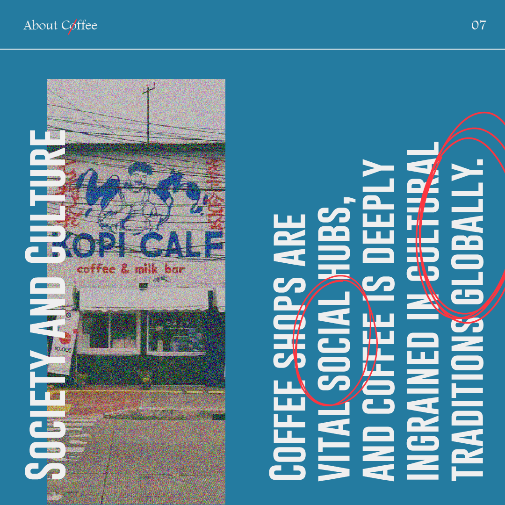
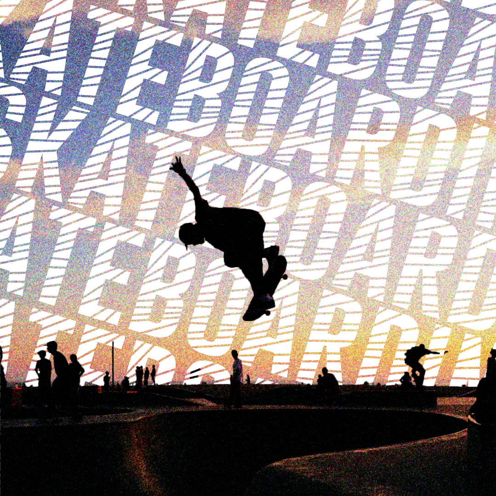
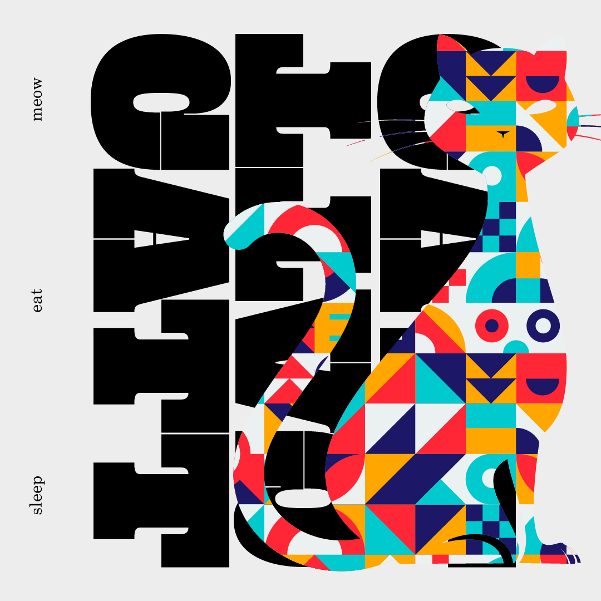
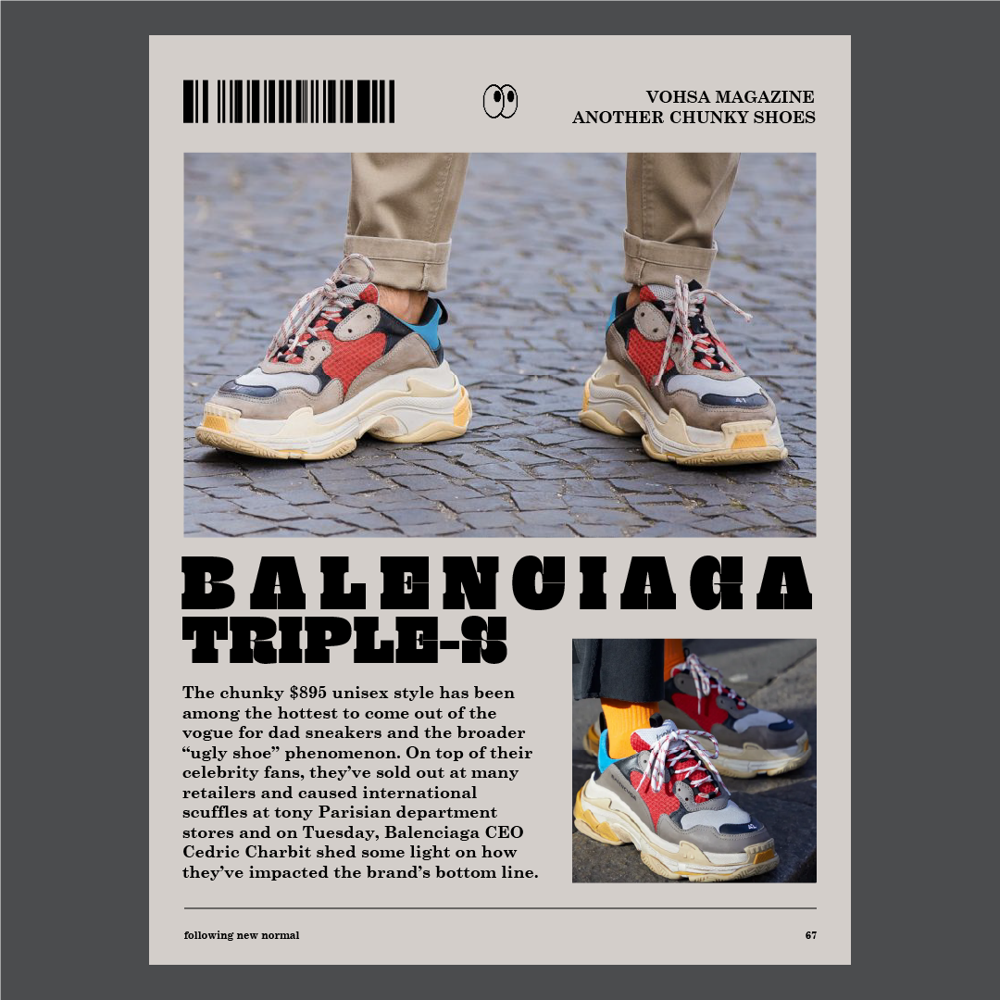
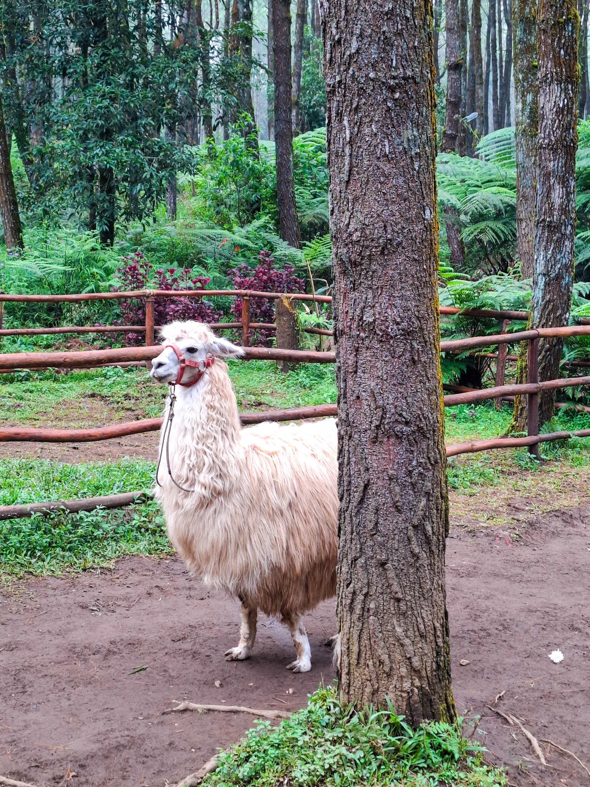
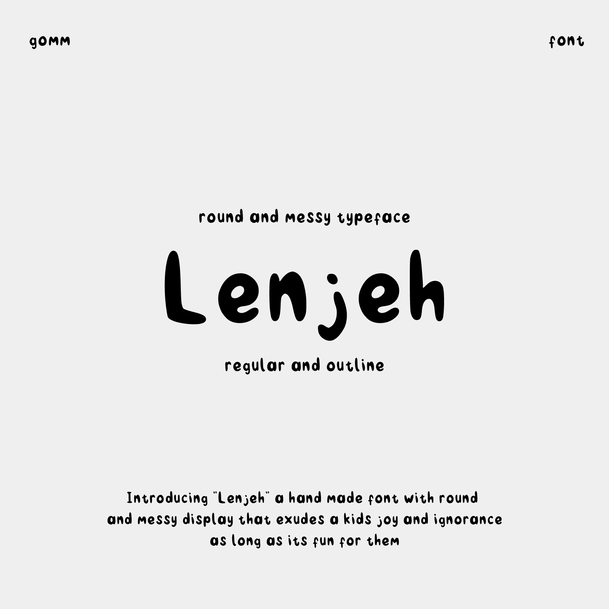
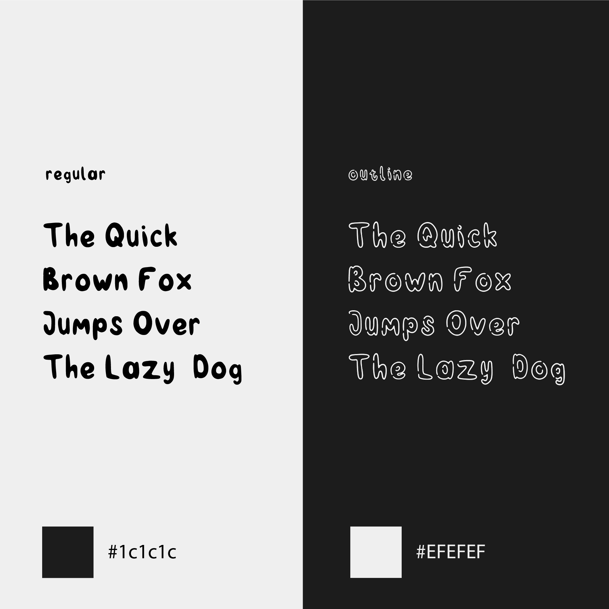

"PORTFOLIO"
INDEX :
"Willow"
PERSONAL STUDIO
CREATED BY HAMAM
"GRAPHIC
DESIGN"







*Dibuat dengan adobe illustrator
"Willow"



"Willow"
"PHOTOGRAPHY"
Diambil dengan kamera hp dan lumix gf-9
dan di edit dengan lightroom
"Willow"
"WEB DESIGN"
Dibuat dengan Tailwind & Vue.js



"FONT"
Dibuat dengan Adobe Illustrator
"Willow"
THANK YOU
"WILLOW" — CREATIVE REPRESENTATION